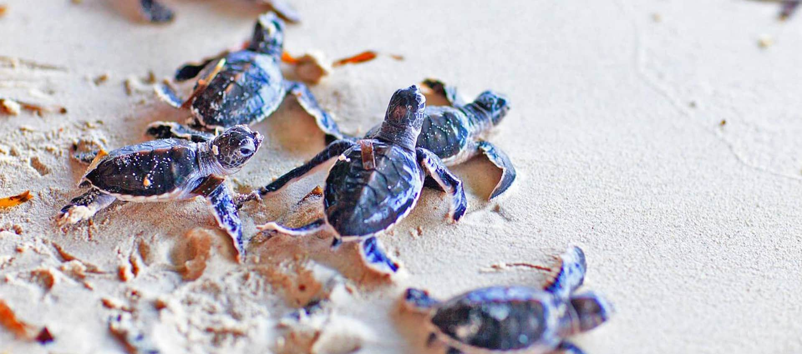
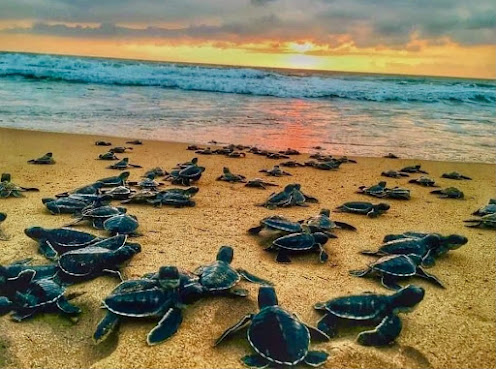
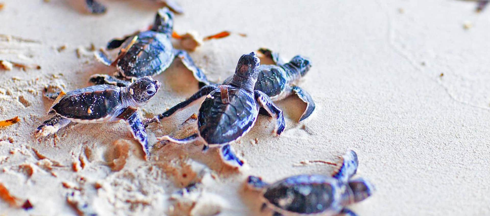
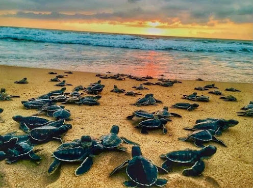
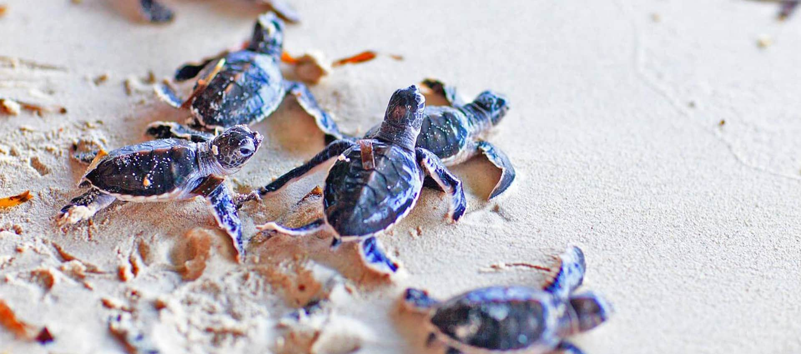
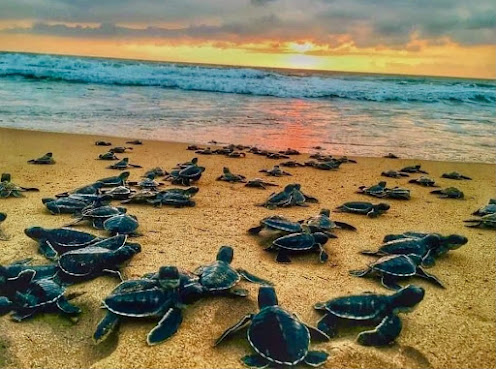

Life is all about the simple things that fill your heart with love, right? For the kind people at the Kosgoda Turtle Hatchery,
it most certainly is. This animal welfare organization truly cares about these young animals, even before they are born.
Six of the seven species of sea turtles are now in risk of extinction.
The majority of it results from the exploitation of natural resources by humans.
Thankfully, this hatchery has accepted responsibility for their protection.
Beginning with watching over the nesting mother turtles,
they next transport their eggs to the safe environment of the hatchery and, on the day of birth,
release the young turtles into the sea. All five of the country's species can be found making their nests at Kosgoda,
one of the relatively few hatcheries.
They are the Hawksbill, Leatherback, Green, and Olive Ridley turtles.
Don't forget to ask our staff if you might release any of these tiny creatures into the ocean during your
visit to feel the satisfying sense of doing so! The first two or three times the wave hits the helpless souls,
they start fluttering back. But after that, they fly into their houses, and the ocean fills your heart with such joy.
In order to ensure that any mother turtles have suitable conditions to lay eggs, the volunteers patrol the beach at night.
They also transport the eggs back to the hatchery to ensure proper hatching without predator injury, and once fully hatched,
they release the young sea turtles back into the ocean. They also care for disabled sea turtles and treat those that have grown
frail as a result of fishing activity.

